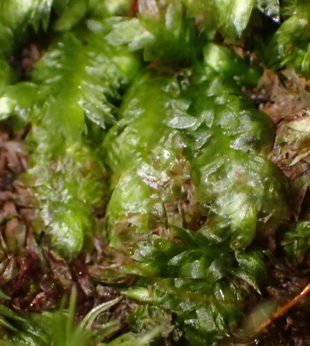

Pilotrichaceae
Pilotrichum Moss Family
Pilotrichaceae is a moderately large family of pleurocarpous mosses primarily found in humid tropical and subtropical regions worldwide. They exhibit diverse growth habits, forming mats, tufts, or sometimes pendent strands, often growing on trees (epiphytic), rocks (epilithic), or decaying wood, frequently near water. Many genera have flattened (complanate) shoots and are characterized by leaves often possessing a strong double costa and large, relatively lax cells.
Overview
The Pilotrichaceae family belongs to the order Hookeriales. It comprises around 15-20 genera and approximately 200-300 species, making it a significant component of bryophyte diversity in the tropics. Key genera include Pilotrichum, Cyclodictyon, Lepidopilum, and sometimes Hookeriopsis (whose placement varies between Pilotrichaceae and Hookeriaceae).
Members of this family often thrive in shaded, humid environments, such as rainforests, cloud forests, and stream banks. Morphologically, they are quite variable but frequently show complanate branching. A common feature is the presence of a strong double costa extending partway up the leaf, although single or absent costae also occur. The leaf cells are often large, smooth, thin-walled (lax), and rhomboidal or hexagonal, giving the leaves a somewhat translucent appearance. Sporophytes typically have long setae and inclined to pendent capsules with well-developed double peristomes.
Ecologically, Pilotrichaceae contribute to the rich epiphytic and epilithic flora of tropical forests. Their often large, lax cells might be related to rapid water absorption in humid environments.
Quick Facts
- Scientific Name: Pilotrichaceae
- Common Name: Pilotrichum Moss Family
- Number of Genera: Approximately 15-20
- Number of Species: Approximately 200-300
- Distribution: Primarily pantropical and subtropical.
- Evolutionary Group: Bryophytes - Mosses - Hookeriales
Key Characteristics (Moss Morphology)
Gametophyte: Growth Form and Habit
Plants are pleurocarpous, with variable habits: forming creeping mats, dense tufts, or sometimes pendent strands. Shoots are frequently complanate (flattened), but can also be radially symmetric. Branching is often pinnate or irregular.
Gametophyte: Stems
Stems often possess a central strand. Paraphyllia are usually absent.
Gametophyte: Leaves
Leaves are often dimorphic, especially in complanate forms: lateral leaves larger and spreading, dorsal/ventral leaves smaller and appressed. Leaves are frequently asymmetric, sometimes bordered with narrow, elongated cells. Shape is variable (ovate, oblong, lanceolate). A key feature in many genera is the costa, which is typically strong and double, with the two forks running parallel and ending below the apex (though sometimes single or absent). Leaf cells are characteristically large, lax (thin-walled), smooth, and typically isodiametric hexagonal or rhomboidal, sometimes becoming longer towards the base.
Sporophyte: Seta, Capsule, and Peristome
Sexual condition is variable (autoicous or dioicous). The seta is usually long, slender or stout, often smooth but sometimes papillose or hairy. The capsule is typically exserted, inclined to horizontal or pendent (rarely erect), usually ovoid to cylindric, and symmetric. The operculum is usually rostrate. The peristome is double and typically well-developed, of the "Hookerioid" type: exostome teeth are often furrowed or papillose, sometimes bordered; endostome has a high basal membrane, broad keeled segments, and well-developed cilia.
Field Identification (Mosses)
Identifying Pilotrichaceae often relies on habitat, growth form, and key leaf features (costa, cells):
Primary Identification Features (Field/Hand Lens)
- Habitat: Humid tropical/subtropical forests, often near water, on trees, rocks, logs.
- Complanate Shoots (often): Look for flattened, frond-like shoots.
- Pleurocarpous habit: Mats, tufts, or pendent strands.
- Double Costa (common): With a good hand lens, look for two parallel nerves in the leaf base, extending partway up (not always present).
- Large, Lax Cells: Leaves often appear somewhat translucent due to large, thin-walled cells (best seen with microscope but sometimes apparent with lens).
Secondary Identification Features (Microscope often needed)
- Costa Confirmation: Verify presence, number (double vs. single), and length of costa(e).
- Cell Shape/Size: Confirm large, lax, smooth, hexagonal or rhomboidal cells.
- Leaf Border: Check for presence/absence of a differentiated border of narrow cells.
- Leaf Dimorphism: Observe differences between lateral and dorsal/ventral leaves in complanate species.
- Peristome Structure: Examination of the Hookerioid peristome (requires mature capsules).
Common Confusion Points (Other Mosses)
- Hookeriaceae: Very closely related (Hookeriales order), sometimes difficult to distinguish without microscopic details or based on differing generic concepts. Often share large cells and double costae.
- Plagiotheciaceae: Pleurocarpous and often complanate, but typically found in temperate regions, usually have short/double or absent costae, and different cell shapes (often longer).
- Neckeraceae: Often complanate and epiphytic/epilithic, but usually have a short single costa (or absent), smaller/different cell shapes, and often immersed/emergent capsules with reduced peristomes.
- Hypnaceae (some genera): Some complanate forms exist, but typically have different cell shapes (often longer, prosenchymatous) and costa structure (usually short/double or absent).
Field Guide Quick Reference (Mosses)
Look For:
- Pleurocarpous mats/tufts/pendent strands
- Humid tropical/subtropical habitat
- Often flattened (complanate) shoots
- Strong double costa (common feature)
- Large, lax, translucent-looking leaf cells (use lens)
Key Variations:
- Growth habit (mat vs. tuft vs. pendent)
- Degree of complanation
- Costa (double vs. single vs. absent)
- Presence/absence of leaf border
- Leaf shape
Notable Genera
Some prominent genera within the Pilotrichaceae family include:

Pilotrichum
(Genus)
The type genus. Often robust plants with pinnately branched, sometimes sub-dendroid habits, frequently near water. Leaves typically ovate, often complanate, with a strong double costa. Capsules usually inclined to pendent on long setae.

Cyclodictyon
(Genus)
Forms delicate, often pale green mats, typically complanate. Characterized by leaves with a distinct border of narrow, linear cells surrounding large, hexagonal, lax laminal cells. Costa strong and double. Often found in very humid, shaded places.

Lepidopilum
(Genus)
A large and variable genus, often complanate. Leaf shape, costa (single, double, or absent), and cell structure vary greatly between species. Seta often papillose or hairy. Primarily Neotropical.

Hookeriopsis
(Genus)
A large genus whose placement alternates between Pilotrichaceae and Hookeriaceae. Often complanate, leaves frequently asymmetric, costa typically short and double or absent. Cells variable. Widespread in tropics.
Phylogeny and Classification
Pilotrichaceae belongs to the order Hookeriales, class Bryopsida. This order is distinct from the larger Hypnales order and is characterized by pleurocarpous mosses often possessing large, lax leaf cells, frequently double costae, and well-developed double peristomes ("Hookerioid" type). The Hookeriales are predominantly distributed in tropical and Southern Hemisphere regions.
Molecular studies confirm the placement of Pilotrichaceae within Hookeriales, closely related to families like Hookeriaceae, Daltoniaceae, and Saulomataceae. The boundaries between Pilotrichaceae and Hookeriaceae, in particular, can be contentious, with genera sometimes moved between them based on new data. The family represents a significant radiation of pleurocarpous mosses adapted to humid tropical environments, showcasing diversity in growth form, leaf structure (especially costa development), and sporophyte features.
Position in Plant Phylogeny
- Kingdom: Plantae
- Division: Bryophyta (Mosses)
- Class: Bryopsida
- Order: Hookeriales
- Family: Pilotrichaceae
Evolutionary Significance
The Pilotrichaceae family is significant for:
- Tropical Pleurocarp Diversity: Represents a major component of moss diversity in tropical rainforests and cloud forests.
- Hookeriales Characteristics: Exemplifies features common in the Hookeriales order, such as large lax cells and often double costae.
- Adaptation to Humidity: Shows adaptations (e.g., large cells, complanate growth) likely related to thriving in constantly humid environments.
- Taxonomic Challenges: Highlights the difficulties in defining family boundaries based solely on morphology, especially when molecular data suggests complex relationships (e.g., with Hookeriaceae).